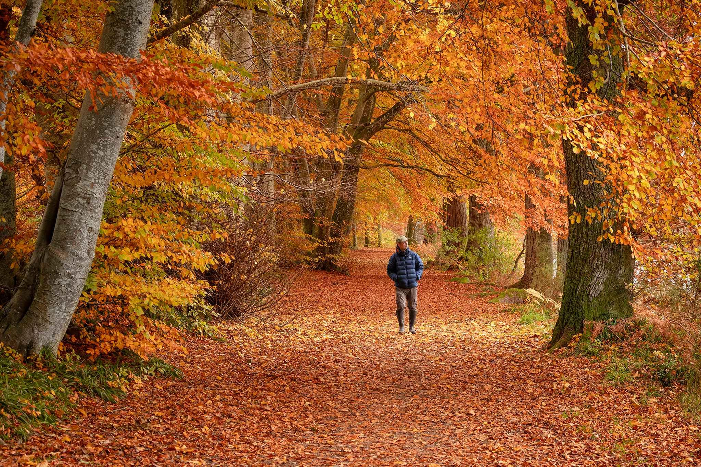

Welcome to Scotland
Discover a land of stunning landscapes, rich history, and warm welcomes. From scenic lochs and rugged mountains to vibrant cities and charming villages, Scotland has something for everyone. Explore ancient castles, hear the sound of live Scottish music, and experience the beauty and magic of Scotland for yourself.
LIFE IN SCOTLAND
Weather
Scotland’s weather is typically mild and unpredictable, but extreme conditions are rare. It’s common to feel like you've experienced all four seasons in a single day, and a short 20-30 minute trip in any direction often brings a completely different climate! Scotland offers something special in every season, so there’s really no "bad" time to visit. As the old saying goes, “There’s no such thing as bad weather, only unsuitable clothing!”
Culture
Scottish culture is deeply rooted in history and remains vibrant today. From ancient clans to modern festivals, each generation has added to Scotland’s unique identity, creating a lively mix of traditions like tartan, music, and dance.
Food and Drinks
Scottish food is hearty and flavorful, reflecting the country’s history and natural resources. Traditional dishes include haggis, a savory mix of meat, oats, and spices, and cullen skink, a rich soup made with smoked haddock. Fresh seafood, like salmon and scallops, is widely enjoyed, thanks to Scotland's coastal waters. A full Scottish breakfast often includes items like black pudding and tattie scones, while sweet treats like shortbread and tablet are popular. Scotland’s whisky, famous worldwide, also plays a role in cooking. Today, Scottish cuisine mixes these classic dishes with modern twists, making it a unique and tasty experience for visitors.”
People
Scottish people are widely recognized for their friendliness and kindness, traits that are deeply embedded in the culture. Whether in the bustling cities or the more remote, picturesque villages, Scots are known for their warm hospitality and willingness to engage with visitors. A typical greeting might involve a hearty “Hello” or “How’s it gaun?” (How’s it going?), often accompanied by a smile and a genuine interest in the well-being of others. Their kindness is not only evident in everyday interactions but also in their community spirit, where helping neighbors and supporting one another is a strong value. This openness and generosity make Scotland a welcoming place, where people feel instantly at home.